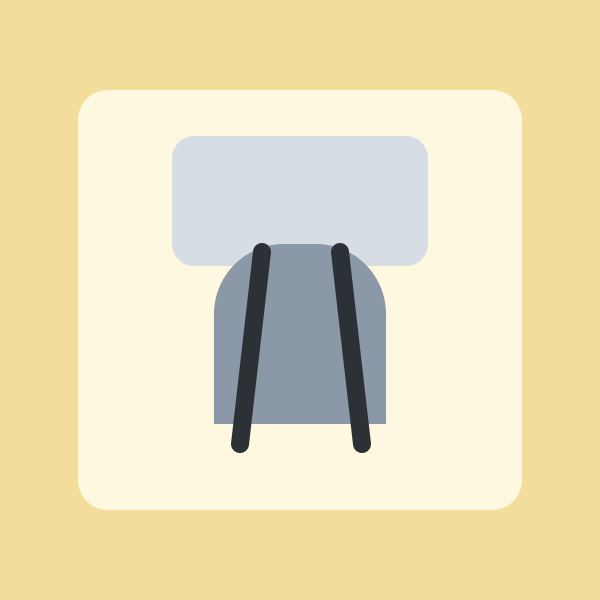

Rychlý výjezd po Praze a okolí
Instalatér a hodinový manžel bez zbytečného čekání.
Kapající baterie, sifon, montáž nábytku i drobné opravy v bytě. Na telefonu 7 dní v týdnu, ideálně do 60 minut.
Příjezd od 490 Kč
Faktura samozřejmostí
Pohotovost večer
Nejčastější zásahy dnes
Protékající WC, ucpaný odpad, montáž police, výměna sifonu a silikonování sprchy.
Služby
Co vyřeším na jedné návštěvě
- Instalatérské zásahy: baterie, sifony, odpady, WC, sprchové kouty.
- Montáže v bytě: garnýže, poličky, světla, zrcadla, skříňky.
- Dokončovací práce: tmelení, silikonování, drobné opravy po nájemnících.
- Pravidelná údržba bytů, kanceláří a krátkodobých pronájmů.
4,9 / 5Hodnocení z opakovaných zakázek
60 minPrůměrný příjezd po Praze
1 200+Dokončených zásahů za poslední 3 roky
Ceník od
Jasné ceny bez překvapení
490 KčVýjezd po Praze
890 KčVýměna baterie
1 290 KčČištění odpadu a sifonu
Reference
Fotky z místa činu
